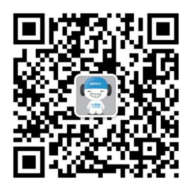

"向上马拉松2017中国公开赛"赛程介绍
"向上马拉松中国公开赛"是由国家体育总局社会体育指导中心主办，吉利汽车与时尚集团联合举办，集体育，时尚和汽车于一体的全民跨界赛事。旨在倡导积极健康的生活方式，传递勇攀高峰的运动精神，激励更多人去挑战自我,超越极限。
向上马拉松2017中国公开赛
2017年，"向上马拉松"再出发。作为承载帝豪GL,帝豪GS,新帝豪等"帝豪家族"向上精神的第一品牌盛事，"向上马拉松2017中国公开赛"
将于3月19日正式全面启动，陆续离开上海,济南,成都,广州,大连和北京六大城市举办。
赛事组织机构
主办单位：国家体育总局社会体育指导中心
联合主办：吉利汽车、时尚集团
承办单位：时尚星秀
协办单位：三夫赛事、迪思传媒集团、JOMA、中国大地保险、杭州易保科技
媒体合作：搜狐、腾讯
赛事亮点
明星战队PK接力赛制
向上马拉松2017中国公开赛”将邀请时尚界、体育界、演艺界等多元领域的26位热爱运动、积极向上的明星名人加入。
整个赛事将由明星领衔，根据“帝豪家族”主力车型组成“自胜队”（帝豪GL）、“动静队”（帝豪GS）、“超越队”（新帝豪）三支“明星战队“，进行多个维度的接力PK；以偶像的身体力行，激励和影响更多人加入到全民健身的队伍中，传递勇攀高峰的运动精神，激励更多人去挑战自我、超越极限、向上拼搏。
运动+公益跨界结合
秉承“不仅体质要向上，精神更要向上”的公益理念，作为“向上马拉松中国公开赛”重要的公益组成部分，由吉利汽车和时尚集团联合发起、明星名人共同参与的公益项目“向上图书馆”，将通过“全民众筹”图书的形式，推动和鼓励全民阅读，并联合社会渠道为年轻人创造更多阅读空间和条件，将“向上图书馆”打造为年轻人精神向上的阶梯，为“向上”赋予更多意义。
赛事形式
赛程安排
3月19日 上海 环球金融中心
03月25日 济南 绿地中心
03月26日 成都 锦绣天府塔（四川广播电视塔）
04月08日 广州
04月09日 大连 一方城堡
04月15日 北京 司马台长城
参与形式
比赛形式为个人赛，分为男子中年组（40-50岁）、女子中年组（40-50岁）、男子青年组（18-39岁）、女子青年组（18-39岁）。
报名选手选择支持的明星战队，并捐赠5本书作为报名费，每支战队200人，每站600人，每站共计3000本书进入“向上图书馆”公益池。
粉丝互动
除通过参加马拉松支持明星战队，明星粉丝后援团亦可以在线上认购图书进行捐赠用于支持明星所在队伍。
粉丝可以通过时尚星秀APP线上打榜为明星集能量卡，集得能量卡最多的战队明星，可以成为该地区马拉松的公益大使；粉丝可以获得时尚星秀“向上马拉松2017中国公开赛”能量榜单地区特色banner图和开机屏到下次活动止。
晋级形式
上海、济南、成都、广州、大连前五站各站男女冠军自动进入北京站总决赛，共计20人（活动主办方提供食宿、交通费自理）。
奖励机制
明星战队奖励机制：
1、 六站团队总成绩时长最短战队胜出，现场为该战队的明星颁发荣誉奖杯。
2、 线上图书馆捐赠图书数量最多的战队胜出；活动结束后线上公布，由明星队长抽取幸运粉丝获得购书券。
3、时尚星秀APP线上打榜人数最多，集得能量卡最多的战队胜出，活动结束后线上公布
个人赛奖励机制（个税自理）：
1、 分区赛（按组别）：冠军：5000元；亚军：3000元；季军1000元
2、 总决赛（按组别）：冠军：30000元；亚军：20000元；季军10000元
竞赛规则
（一） 所有参赛选手按竞赛项目在规定时间及区域进行检录，未签到检录的选手，参赛成绩将不予承认。
（二）比赛采用分批出发起跑的办法。
（三）起跑顺序：起跑时，种子选手在方队最前面，每10名选手出发之间间隔15秒，发令枪响后依次出发，分别为男子青年组，男子中年组，女子青年组和女子中年组。
（四）关门时间：1.5小时，为了保证参赛选手比赛安全、顺利，比赛期间比赛路线各段实行限时大楼封闭。参赛选手未在规定的关门时间完成比赛的须立即停止比赛，退出赛道。退出比赛的选手可乘坐组委会提供的与用电梯返回出发点。
（五）组委会为参加垂直马拉松选手提供计时芯片感应计时服务。选手必须通过起点和终点的计时芯片感应带才能获得有效成绩。（注：计时芯片容易损坏，不要折叠和挤压。另外，计时芯片的损坏和遗失也会对选手的参赛造成较大影响，请务必小心保管。）
（六）存包处：本次比赛设存包处，贵重物品请自行保管。
（七）饮水站：大楼赛道中及终点设立饮水站。
（八）医疗站：一楼广场，赛道转换层，及楼顶分别设立医疗点。
（九）组委会将对起点、全程路线和终点进行监控，出现以下违反比赛规定的参赛选手将被取消参赛成绩。
1、虚假年龄报名戒报名后由其他人员代跑；
2、一名运动员同时携带两枚戒两枚以上芯片参加比赛；
3、不按规定的起跑顺序在非报名项目的起跑点起跑；
4、起点活动中不按规定时间出发抢跑；
5、关门时间到后不停止比赛戒退出比赛后又进入赛道；
6、没有沿规定路线跑完各个项目的全程；
7、未跑完全程私自通过终点；
8、不服从赛事工作人员指挥，干扰比赛有序运行的。
9、其他违反规则行为规定的。
（十）在比赛中，因参赛者利用虚假信息获取参赛资格戒者报名后由他人代跑等原因所发生的一切责任后果，均由参赛者本人承担。
参赛要求
年龄要求
1、男/女子中年组为：40-50岁，男/女青年组为18-39岁。
2、参赛选手须持有效证件（身份证、护照、军官证等）按照项目的年龄规定进行报名。持有中国身份证的不接受除身份证外的其他证件报名，港澳台及外国选手可持护照及其他有效证件报名。
健康要求
参赛选手应身体健康，有跑步爱好。参赛选手应根据自己的身体状况和训练水平，决定是否参赛。
有以下情况者不得参加本次比赛所设各项目比赛：
1、先天性心脏病和风湿性心脏病患者；
2、高血压和脑血管疾病患者；
3、心肌炎和其它心脏病患者；
4、冠状动脉病患者和严重心律不齐者；
5、血糖过高戒过少的糖尿病患者；
6、恐高症戒其它相关恐惧症患者；
7、其他不适合运动的疾病患者。
在比赛中，因个人身体及其他个人原因导致的人身损害和财产损失，由参赛选手个人承担责任。组委会建议参赛选手进行自我评估，确认自己的身体状况能够适应垂直马拉松运动，才可参赛。所有参赛选手，必须签署《2017向上马拉松中国公开赛-参赛选手活动声明》
比赛性质和规模
2017向上马拉松中国公开赛，每场比赛限报600人；全国共计6场比赛，包括5场分区赛和1场总决赛
报名相关
（一）报名渠道
1、 登陆官方线上微信公众号报名通道，进行扫码报名
- 微信公众号：
- 
- @江陵路1760号
- @吉利汽车
2、 全国吉利帝豪系授权经销商门店报名；
（二）报名时间
1、报名周期：各个分区赛前15天-5天
（三）参赛费用
1、免费参与
2、选手需捐赠5本书作为报名费
（四）竞赛物品
参赛选手需在比赛日前一天，携带5本书，凭领物短信，前往赛事组委会指定地点，领取参赛包（赛手包，T恤，号码簿，芯片）并签署参赛选手活动声明；
（五）选手名录、成绩查询
关注赛事微信端，即可查阅成绩，下载证书。
（六）参赛选手交通、食宿等费用自理。
组委会联系方式
组委会联系方式
向上马拉松中国公开赛组委会
电话：010-62028373转801
联系人：佳佳
官方微信：@江陵路1760号 @吉利汽车
注意事项
1、报名者必须真实、准确地填写个人报名信息，以确保参赛信息及组委会赛事信息及时准确发送给选手。
2、为保护赛事赞助商权益，除组委会指定赞助商外，2017向上马拉松中国公开赛全程严禁出现其他任何形式的带有商业宣传性质的宣传物，包括但不限于衣服、LOGO贴、标语、口号、旗帜、条幅、气球、模型等物品。违规者将被取消参赛资格，立即退出赛场。
3、赛事组委会有权对不符合参赛资格、提供虚假个人信息的选手取消比赛资格。
保险
本次比赛主办方位所有参赛人员和工作人员投保团体险、意外险（意外医疗、意外身故、意外残疾）。
未尽事宜，另行通知。
本规程解释权属于向上马拉松中国公开赛组委会